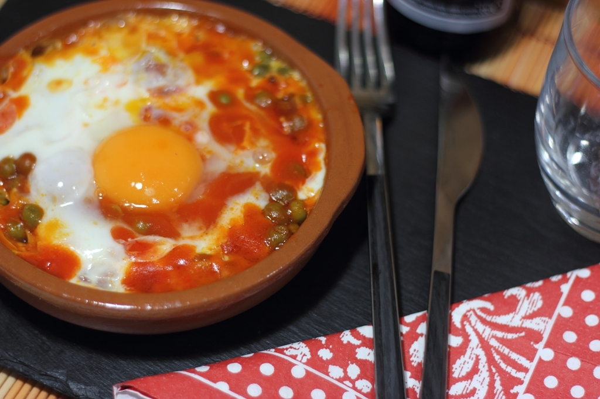

Huevos al plato en 4 minutos!

Huevos al plato en 4 minutos, receta para microondas
Estos huevos al plato o a la flamenca son otra de mis cenas rápidas por excelencia, manchan poco y se hacen
volando en el microondas!
Preparando esta receta del modo que vamos a contar hoy ahorramos tiempo no solo a la hora de cocinar, sino
también de fregar, pues el mismo recipiente que usamos para cocinar nos sirve para servir y para comer.
Ingredientes:
- 1 huevo
- Puerro o cebolla, 1 trozo de unos 5 cm
- 2 Espárragos blancos en conserva
- Chorizo, 25 g
- Jamón serrano o ibérico, 25 g
- 1/2 lata de Guisantes en conserva
- 1 cucharadita de aceite de oliva
- Salsa de tomate
Hagamos esta receta paso por paso
- Separamos la yema y la clara del huevo (IMPORTANTÍSIMO si queremos que el huevo nos quede en su punto al
cocinarlo en el microondas). Ponemos la clara del huevo en la cazuela en la que estamos preparando nuestros
huevos al plato y calentamos en el microondas durante dos períodos de 30 segundos a 800 W (es decir, 30
segundos, paramos el microondas, abrimos la puerta para que entre aire y otros 30 segundos). Si el huevo
fuese muy grande o estuviese muy frío de la nevera lo cocinaremos 15 segundos más
-
Ahora tendremos la clara cuajada por los bordes, pero cruda en el centro. Es el momento de añadir la yema
que tenemos reservada. Cocinamos 30 segundos a 800 W y, al igual que antes, si el huevo es muy grande o está
muy frío, seguimos calentando de 10 en 10 segundos hasta que veamos que la clara está casi cuajada (no
importa que quede un pelín líquida porque con el calor residual termina de hacerse en lo que nos sentamos a
la mesa).